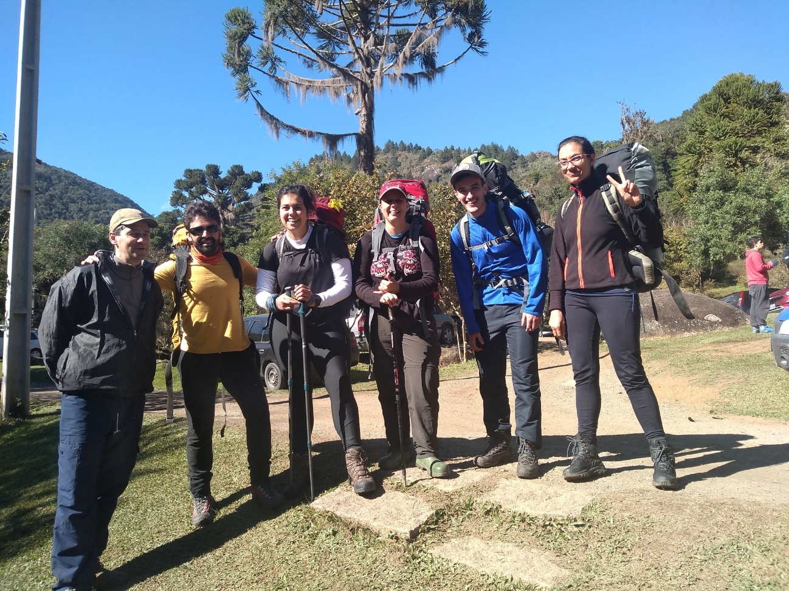
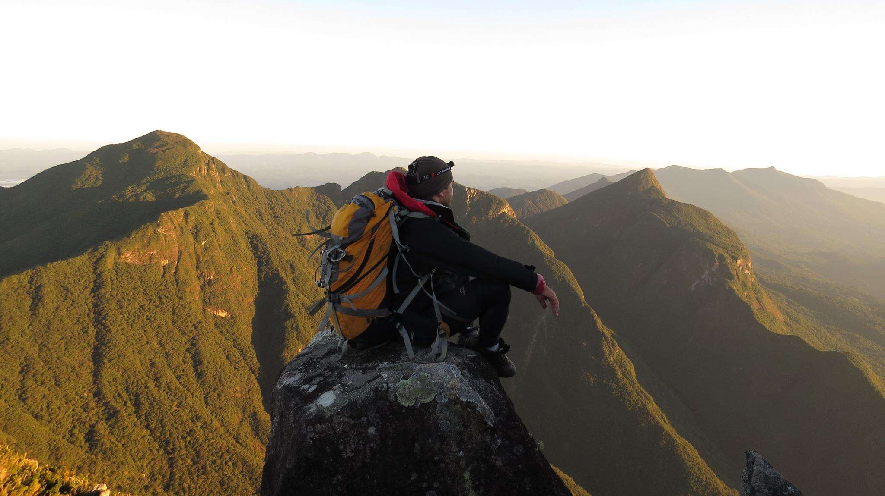
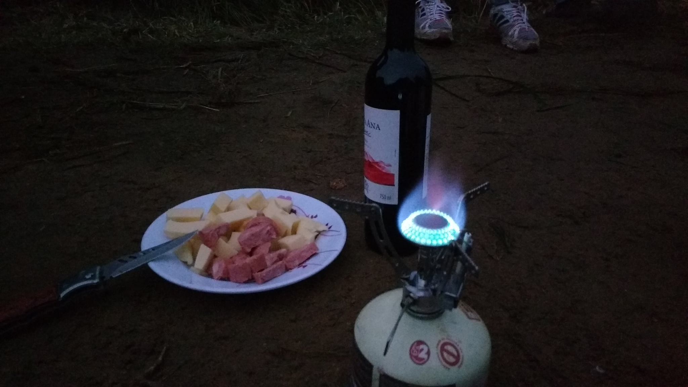
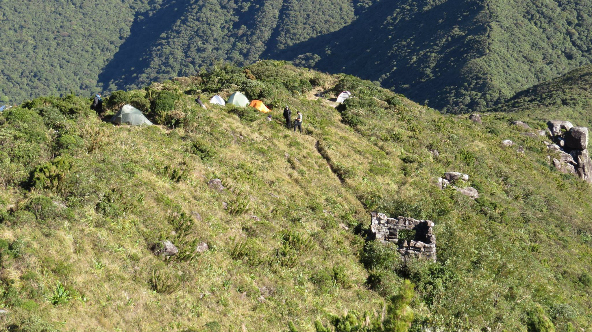
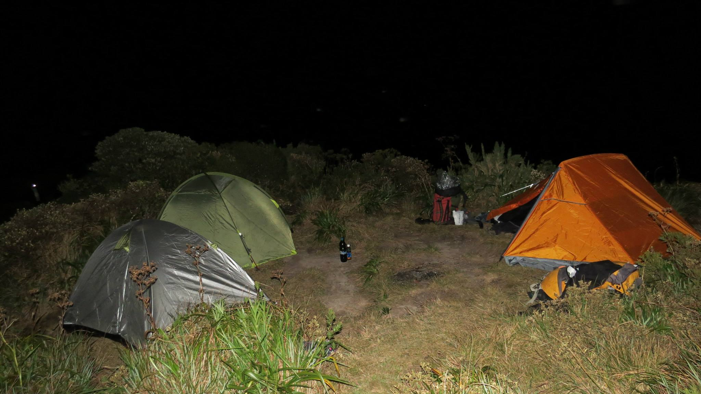
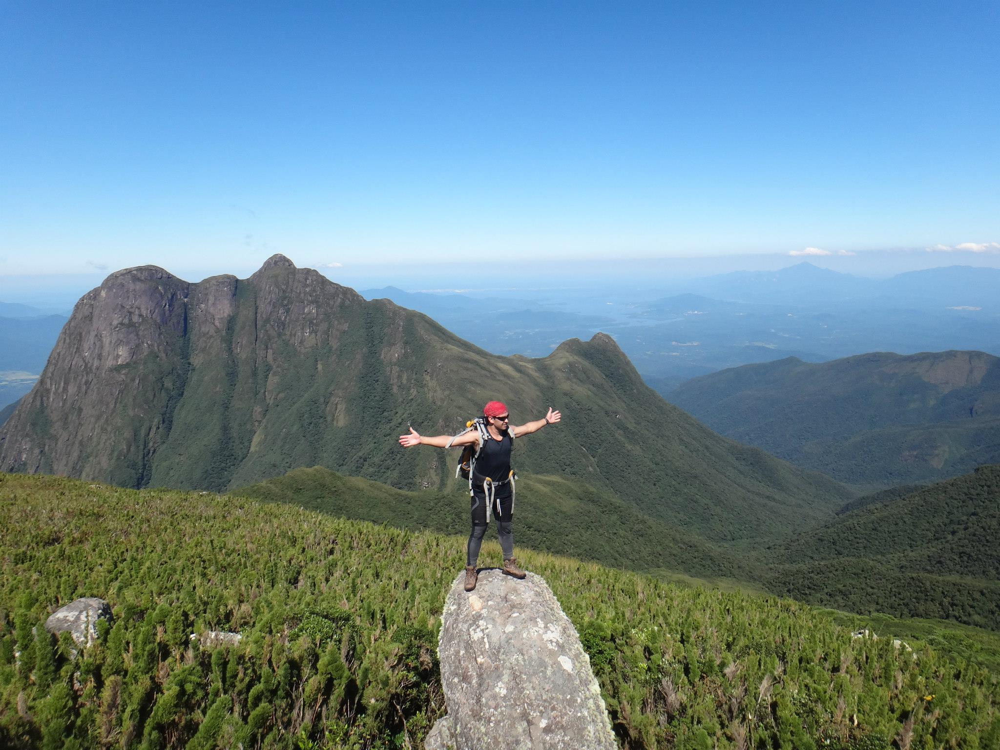

Detalhes do Roteiro
Acampar no Pico Paraná, o ponto mais alto do sul do Brasil com 1.877 metros de altitude, é uma experiência desafiadora e recompensadora para os amantes de trekking e montanhismo. Localizado entre os municípios de Antonina e Campina Grande do Sul, no estado do Paraná, o parque oferece uma biodiversidade rica e vistas panorâmicas impressionantes.
Pico Paraná 1.877m (PR) – É a montanha mais alta da Região Sul do Brasil, com formação rochosa de granito e gnaisse, localizado entre o município de Antonina e Campina Grande do Sul, no conjunto de serra chamado Ibitiraquire. A vegetação é composta em quase sua totalidade em Floresta Ombrófila Densa Montana e Alta – Montana e de refúgios ecológicos. São de 6 a horas de caminhada até atingir seu cume.
Serviços incluídos:
Translado in/out, saindo de Curitiba e Morretes;
Acampamento no A1 ou A2;
Barracas para até duas pessoas;
Isolante térmico e saco de dormir;
Janta principal em cima da montanha;
Café da manhã na montanha;
Tarifas
| N° de pessoas | Guia bilíngue | Valor |
|---|---|---|
| 2 a 8 | Nao | R$ 1.787.00 |
| 2 a 8 | Sim | R$ 1.900.00 |
Galeria de Fotos






